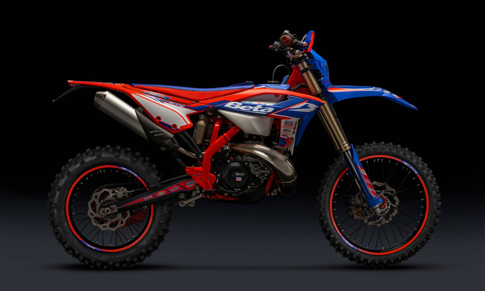

MIGLIOR PRODOTTO IN COMMERCIO

La Beta RR 300 2022 è una moto da enduro che offre prestazioni elevate e una grande maneggevolezza su terreni variabili.
La moto è equipaggiata con un motore a 2 tempi da 293.1 cc, che offre una potenza controllabile e una buona coppia.
Questo tipo di motore è apprezzato per la sua risposta pronta e la sua potenza in uscita. Il telaio è leggero ma robusto, per sopportare
gli impatti e le sollecitazioni dell'off-road. Il design è tipico delle moto da enduro, con una posizione di guida rialzata per affrontare meglio
ostacoli e terreni accidentati. La carrozzeria è slanciata e sportiva, con colori accattivanti. Questa moto è ideale per chi ama l'off-road,
le competizioni enduro e cerca un equilibrio tra potenza, maneggevolezza e affidabilità.
SCHEDA TECNICA
Nome: Beta rr 300
Cilindrata: 293.4cc
Motore: 2 tempi
Cambio: 6 marce
Utilizzo: enduro
Capacità serbatoio: 9.5 l
Cavalli: 45 cv
Emissioni: euro 5
Peso: 103 kg
Prezzo: 8700 euro